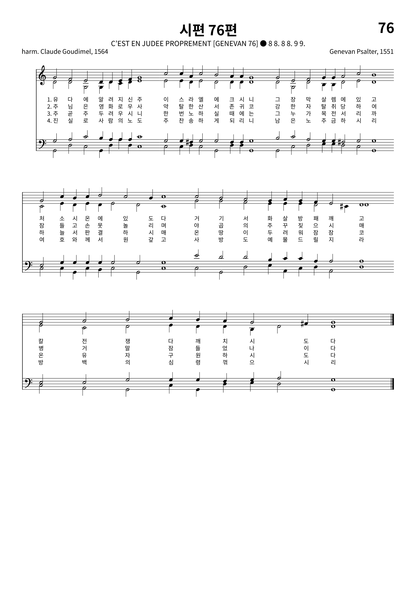

시편 76편
C’EST EN JUDEE PROPREMENT [GENEVAN 76] · 8 8. 8 8. 9 9.
곡조: Genevan Psalter, 1551 · 화성: Claude Goudimel, 1564 · 가사: 개역한글판 시편 76편 편역(AI 초벌 편역판 · 신학 감수 전) · 4절
악보 PDF MusicXML(출력용) MusicXML(반주용, 전주·반복 포함) 개역한글 시편 76편 읽기
악보

가사
1절 (시편 1-3)
유다에 알려지신 주
이스라엘에 크시니
그 장막 살렘에 있고
처소 시온에 있도다
거기서 화살 방패 깨고
칼 전쟁 다 깨치시도다
유다에 알려지신 주
이스라엘에 크시니
그 장막 살렘에 있고
처소 시온에 있도다
거기서 화살 방패 깨고
칼 전쟁 다 깨치시도다
2절 (시편 4-6)
주님은 영화로우사
약탈한 산서 존귀코
강한 자 탈취 당하여
잠들고 손 못 놀리며
야곱의 주 꾸짖으시매
병거 말 잠들었나이다
주님은 영화로우사
약탈한 산서 존귀코
강한 자 탈취 당하여
잠들고 손 못 놀리며
야곱의 주 꾸짖으시매
병거 말 잠들었나이다
3절 (시편 7-9)
주 곧 주 두려우시니
한 번 노하실 때에는
그 누가 목전 서리까
하늘서 판결하시매
온 땅이 두려워 잠잠코
온유자 구원하시도다
주 곧 주 두려우시니
한 번 노하실 때에는
그 누가 목전 서리까
하늘서 판결하시매
온 땅이 두려워 잠잠코
온유자 구원하시도다
4절 (시편 10-12)
진실로 사람의 노도
주 찬송하게 되리니
남은 노 주 금하시리
여호와께 서원 갚고
사방도 예물 드릴지라
방백의 심령 꺾으시리
진실로 사람의 노도
주 찬송하게 되리니
남은 노 주 금하시리
여호와께 서원 갚고
사방도 예물 드릴지라
방백의 심령 꺾으시리